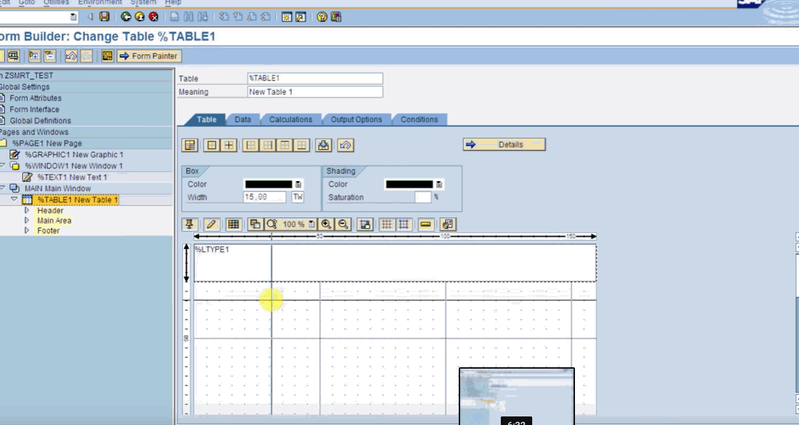

Базовая установка SAP содержит 20 000 таблиц БД, 3000 из которых являются таблицами конфигурации. В этих таблицах около 8000 конфигурационных решений, которые нужно принять ещё до начала работы программы. Несмотря на сложность настройки, программное обеспечение SAP ERP обеспечивает ключевую ценность — широкую интеграцию между собой нескольких бизнес-процессов. Эта интеграция приводит к тысячам вариантов использования в организации. SAP организует эти варианты использования в «транзакциях», которые представляют собой бизнес-действия. Некоторые примеры транзакций включают «создание заказа» и «отображение клиента». Эти транзакции организованы в формате вложенного каталога.
В интерфейсе SAP разработчики могут создавать собственные таблицы БД. Это реляционные таблицы как обычные базы SQL: столбцы различных типов, внешние ключи, ограничения значений, а также разрешения на чтение/запись.
SAP разработала язык под названием ABAP (Advanced Business Application Programming, первоначально Allgemeiner Berichts-Aufbereitungs-Prozessor, по-немецки «общий процессор создания отчётов»). Он позволяет разработчикам запускать индивидуальную бизнес-логику в ответ на определённые события или по расписанию. ABAP — это язык с богатым синтаксисом, здесь примерно втрое больше ключевых слов, чем в JavaScript. После написания программы (в SAP есть встроенный редактор для программирования) она публикуется как транзакция, вместе с индивидуальным кодом TCode.
SAP также поставляется с конструктором для создания UI. Он поставляется с удобными функциями, такими как сгенерированные формы на основе таблицы БД. Несмотря на это, его довольно трудно использовать.

Конструктор интерфейса [4]
Система SAP R/3 состоит из набора прикладных модулей, которые поддерживают различные бизнес-процессы компании и интегрированы между собой в масштабе реального времени. [5]
Финансы (FI). Модуль предназначен для организации основной бухгалтерской отчетности, отчетности по дебиторам, кредиторам и вспомогательной бухгалтерии. Он включает в себя: Главную книгу, Бухгалтерию дебиторов, Бухгалтерию кредиторов, Финансовое управление, Специальный регистр, Консолидацию и Информационную систему учета и отчетности.
Контроллинг (CO). Модуль обеспечивает учет затрат и прибыли предприятия и включает в себя: Учет затрат по местам их возникновения (центры затрат), Учет затрат по заказам, Учет затрат по проектам, Калькуляцию затрат, Контроль прибыльности (результатов), Контроль мест возникновения прибыли (центров прибыли), Учет выработки, Контроллинг деятельности предприятия.
Управление основными средствами (AM). Модуль предназначен для учета основных средств и управления ими. Ключевые элементы модуля: Техническое управление основными средствами, Техобслуживание и ремонт оборудования, Контроллинг инвестиций и продажа активов, Традиционный бухучет основных средств, Замена основных средств и амортизация, Управление инвестициями.
Управление проектами (PS). Прикладной модуль PS поддерживает планирование, управление и мониторинг долгосрочных проектов с высоким уровнем сложности. Ключевые элементы прикладного модуля PS: Контроль финансовых средств и ресурсов, Контроль качества, Управление временными данными, Информационная система управления проектами, Общие модули.
Производственное планирование (PP). Модуль используется для организации планирования и контроля производственной деятельности предприятия. Ключевые элементы прикладного модуля: Спецификации (BOM), Технологические карты, Рабочие центры (места), Планирование сбыта (SOP), Производственное планирование (MPS), Планирование потребности в материалах (MRP), Управление производством (SFC), Производственные заказы, Калькуляция затрат на изделие, Учет затрат по процессам, Серийное производство, Канбан (Just in time), Планирование непрерывного производства.
Управление материальными потоками (MM). Модуль поддерживает функции снабжения и управления запасами, используемые в различных хозяйственных операциях. Ключевые элементы: Закупка материалов, Управление запасами, Управление складами, Контроль счетов, Оценка запасов материала, Аттестация поставщика, Обработка работ и услуг, Информационная система закупок и информационная система управления запасами.
Сбыт (SD). Модуль решает задачи распределения, продаж, поставок и выставления счетов. Ключевые элементы: Предпродажная поддержка, Обработка запросов, Обработка предложений, Обработка заказов, Обработка поставок, Выставление счетов (фактурирование), Информационная система сбыта.
Управление качеством (QM). Этот модуль включает в себя информационную систему и систему управления качеством. Он обеспечивает поддержку планирования качества, проверку и контроль качества при производстве и закупках. Ключевые элементы: Проверка качества, Планирование качества, Информационная система контроля качества (QMIS).
Техобслуживание и ремонт оборудования (PM). Модуль помогает учитывать затраты и планировать ресурсы на техобслуживание и ремонт. Ключевые элементы: Незапланированный ремонт, Управление сервисом, Планово-профилактический ремонт, Ведение спецификаций, Информационная система техобслуживания и ремонта.
Управление персоналом (HR). Полностью интегрированная система для планирования и управления работой персонала. Ключевые элементы: Администрирование персонала, Расчет зарплаты, Управление временными данными, Расчет командировочных расходов, Льготы, Набор новых сотрудников, Планирование и повышение квалификации персонала, Использование рабочей силы, Управление семинарами, Организационный менеджмент, Информационная система персонала.
Управление информационными потоками (WF). Эта часть системы связывает интегрированные прикладные модули с общими для всех приложений технологиями, сервисными средствами и инструментами. Управление потоком операций (workflow) автоматизирует хозяйственные процессы в соответствии с заранее определенными процедурами и правилами. Модуль включает многофункциональную офисную систему с встроенной электронной почтой, систему управления документами, универсальный классификатор и систему интеграции с САПР. Когда происходит определенное событие, запускается соответствующий процесс, и диспетчер потока операций инициирует единицу потока операций (Workflow Item). Данные и документы объединяются и обрабатываются на каждом шаге в соответствии с определенной логикой.
Отраслевые решения (IS). Объединяет прикладные модули SAP SAP R/3 и дополнительную функциональность, специфичную для отрасли. Сегодня имеются отраслевые решения для промышленности: авиационной и космической, оборонной, автомобильной, нефтяной и газовой, химической, фармацевтической, машиностроительной, товаров народного потребления, электронной и непроизводственной сферы: банки, страхование, государственные органы, телекоммуникации, коммунальное хозяйство, здравоохранение, розничная торговля.